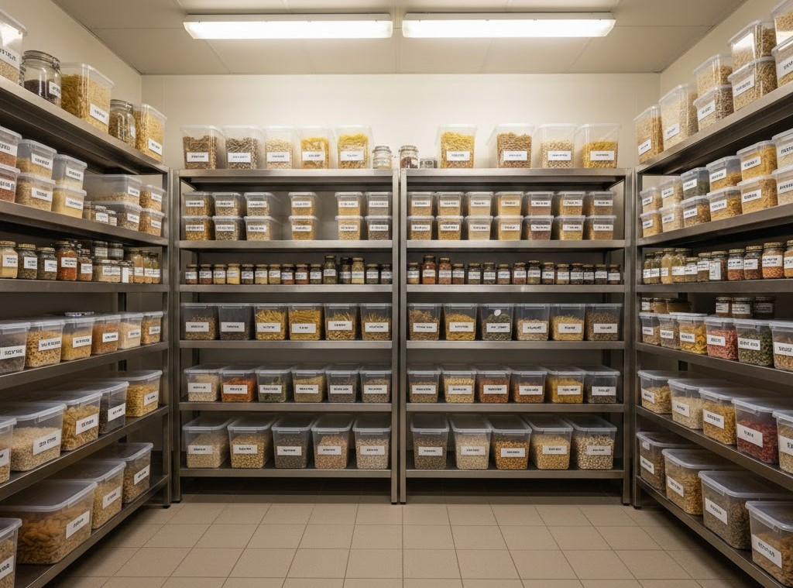
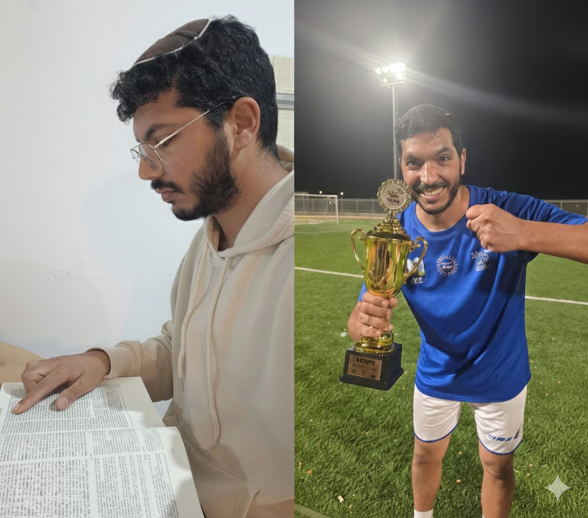

אושרי כהן
Junior QA Engineer | Operations & Logistics Specialist
סטודנט במכללה לאוטומציה אצל גל מטלון
צפו בעשייה שלי
Junior QA Engineer | Operations & Logistics Specialist
סטודנט במכללה לאוטומציה אצל גל מטלון
צפו בעשייה שלישלום, אני אושרי כהן, בן 36, נשוי ואבא ל-2 ילדים מתוקים ב"ה.
אני מתגורר באבן שמואל ועובד בתחום הלוגיסטיקה במטבח – אחראי על הזמנת וסידור סחורה וניהול המלאי. בנוסף, אני מעביר חוג לגו הנדסי לילדים, שם אנחנו לומדים יחד חשיבה אלגוריתמית ופתרון בעיות.
אני אוהד מושבע של מכבי ת"א 💙💛, אוהב לשחק כדורגל ומקפיד על לימוד דף יומי בגמרא. חשוב לי מאוד הסדר והארגון, ואני פדנט באופי שלי – תכונה שמובילה אותי לדיוק מקסימלי בעבודה.
החלום שלי הוא לעסוק ב-QA, תחום שמתחבר לאהבה שלי לסדר ודיוק, ואני נרגש מהפרק החדש בחיים שלי.
אני מאמין ש-QA זה לא רק למצוא באגים, זה להבטיח איכות מקצה לקצה.
בתפקידי בתפעול, אני מבצע "בדיקות קבלה" יומיומיות: אימות סחורה מול הזמנה, בחינת שוברי קבלה ובדיקת תקינות פיננסית. ב-QA אני מביא את אותה רמת פדנטיות ודיוק.
היכולת שלי להצליב נתונים ולוודא שהתוצר תואם את הדרישה היא המנוע שלי בעולם הבדיקות.

ניהול מלאי, ארגון וביצוע בקרת איכות יומיומית.

לימוד חשיבה אלגוריתמית ופתרון תקלות (Debugging).

שילוב של רוח צוות מהכדורגל ולימוד דף יומי מעמיק.